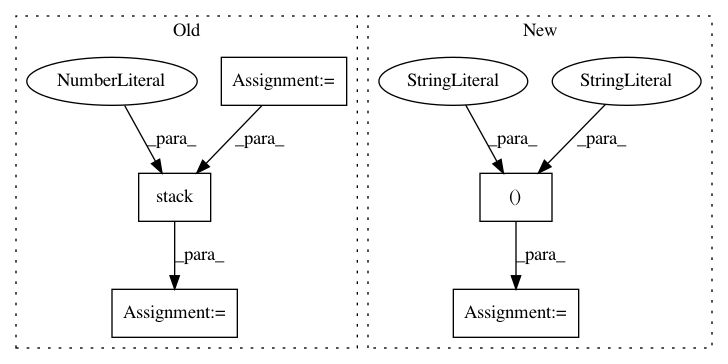

f7b4c6de2037ebedf6bc8ea5979e81666d54534f,research/object_detection/meta_architectures/center_net_meta_arch.py,,convert_strided_predictions_to_normalized_boxes,#Any#Any#Any#,992
Before Change
true_heights_list = tf.unstack(true_heights, axis=0)
true_widths_list = tf.unstack(true_widths, axis=0)
box_lists = list(map(_normalize_boxlist,
zip(box_lists, true_heights_list, true_widths_list)))
boxes = tf.stack([box_list_instance.get() for
box_list_instance in box_lists], axis=0)
return boxes
After Change
// Note: We use tf ops instead of functions in box_list_ops to make this
// function compatible with dynamic batch size.
boxes = boxes * stride
true_image_shapes = tf.tile(true_image_shapes[:, tf.newaxis, :2], [1, 1, 2])
boxes = boxes / tf.cast(true_image_shapes, tf.float32)
boxes = tf.clip_by_value(boxes, 0.0, 1.0)
return boxes
In pattern: SUPERPATTERN
Frequency: 3
Non-data size: 5
Instances
Project Name: tensorflow/models
Commit Name: f7b4c6de2037ebedf6bc8ea5979e81666d54534f
Time: 2020-12-01
Author: rathodv@google.com
File Name: research/object_detection/meta_architectures/center_net_meta_arch.py
Class Name:
Method Name: convert_strided_predictions_to_normalized_boxes
Project Name: chuyangliu/snake
Commit Name: be3f3039c92721bb54de1a7eda210a87f19da67d
Time: 2018-01-05
Author: chuyang.s.liu@gmail.com
File Name: snake/solver/dqn.py
Class Name: DQNSolver
Method Name: __build_net
Project Name: fgnt/pb_bss
Commit Name: 2cfa9aa576ae7544f76e66854edd304690a5822b
Time: 2019-08-08
Author: mail@lukas-drude.de
File Name: paderbox/speech_enhancement/beamformer_wrapper.py
Class Name:
Method Name: get_multi_source_bf_vector_from_masks